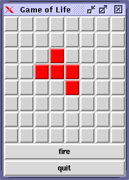

The method built around the notion of Abstract State Machine (ASM) has been proved to be a scientifically well founded and an industrially viable method for the design and analysis of complex systems, which has been applied successfully to programming languages, protocols, embedded systems, architectures, requirements engineering, etc. The analysis covers both verification and validation, using mathematical reasoning (possibly theorem-prover-verified or model-checked) or experimental simulation (by running the executable models). The tutorial, presented by Egon Börger, starts from scratch by introducing the definition and simple examples of ASMs. Their major scientific and industrial applications are surveyed, covering the period from 1990 to 2000. Then an outstanding case study is presented, namely the ASM Definition and Analysis (Verification and Validation) of Java and the Java Virtual Machine (book by Robert Stärk, Joachim Schmid, and Egon Börger). The tutorial concludes with an introduction, presented by Joachim Schmid, of AsmGofer, an ASM programming system making ASM models executable by programming the external functions in Haskell. The AsmGofer introduction includes a demo of the executable versions of the Java/JVM ASM models.
The advances in the theory, the tool development, and the progressive industrial employment of Abstract State Machines (ASMs) in the 90's have turned ASMs into a practical technique for disciplined rigorous system engineering in the large. See www.eecs.umich.edu/gasm for the hundreds of papers published on ASMs and their applications, covering high-level design and analysis of real-life programming languages and their implementations on virtual or real machines (e.g. Java/JVM, C, VHDL, SDL), of protocols (e.g. Kermit, Kerberos), embedded system control programs, architectures (RISC processors, PVM, APE, ASIC components), requirements capture, etc.
Although the definition of ASMs is surprisingly simple (see below), Abstract State Machines offer a certain number of theoretically well-founded and industrially useful methods that support the entire software development cycle. These include rigorous modelling and analysis methods (both mathematical verification and experimental validation) for
(i) the requirements, during the early phases of software development, supporting their elicitation, specification, inspection, and testing through so-called ground models, and
(ii) the refinement of the high level models, through a design process which reliably connects the requirements to the code, supporting a practical documentation discipline for code maintenance and reuse.
The operational and abstract character of ASMs
· provides a convenient basis for turning the abstract definitions into executable models which can be used for validation and experiments,
· simplifies the (mathematical or machine checked) justification of the correctness of the design offering a rigorous framework for the analysis of run-time properties at the appropriate level of abstraction.
For a non-technical introduction explaining the ASM method, surveying its major applications prior to 1999, and comparing it to other major modelling approaches in the literature, see High Level System Design and Analysis using Abstract State Machines .ps (also in .pdf format) ( Abstract)
A sequential ASM is defined as a set of transition rules of form
if Condition then Updates
which transform first-order structures (the states of the machine), where the guard Condition, which has to be satisfied for a rule to be applicable, is a variable free first-order formula, and Updates is a finite set of function updates (containing only variable free terms) of form
f (t1,...,tn) := t
The execution of these rules is understood as updating, in the given state and in the indicated way, the value of the function f at the indicated parameters, leaving everything else unchanged. (This proviso avoids the frame problem of declarative approaches.) In every state, all the rules which are applicable are simultaneously applied (if the updates are consistent) to produce the next state. If desired or useful, declarative features can be built into an ASM by integrity constraints and by assumptions on the state, on the environment, and on the applicability of rules.
For distributed ASMs, the notion of run, which is defined for sequential systems as sequence of computation steps of a single agent, is replaced by the notion of a partial order of moves of finitely many agents, such that the following three conditions are satisfied: (i) co-finiteness: each move has only finitely many predecessors, (ii) sequentiality of single agents: the moves of every agent are linearly ordered, (iii) coherence: each finite initial segment X corresponds to a state s(X), interpreted as the result of executing all moves in X, which for every maximal element x of X is obtainable by applying move x in state s(X-{x}). The moves of the single agents can be atomic or durative, but for simplicity the preceding definition of distributed runs assumes actions to be atomic.
This definition of distributed ASMs, which are also called multi-agent ASMs, provides a theoretical basis for a coherent global system view for concurrent sequential computations of single agents, each executing its own sequential ASM, at its own pace and with atomic actions applied in its own local states, including input from the environment as monitored functions. The definition guarantees that given any finite initial segment of a distributed run, all linearizations of this segment, also called interleavings, yield the same global view of the state resulting from the computation. In other words, if moves of different agents are independent of each other in a given run, they can be scheduled relatively to each other in an arbitrary manner, without influencing the overall view of the state resulting from the run.
The notion of distributed ASM runs comes with no recipe for constructing such runs, which in applications may turn out to be a challenging problem. However, it is this generality of the concept that provides the freedom to design and analyse models for distributed systems without any a priori commitment to special synchronization or communication concepts, an important consequence for the practice of modelling. This includes the abstraction from any particular conditions on the timing of moves of the single agents. The ordering of moves reflects only their causal dependency, which is a before-after-relation without further details on the precise timing of the moves.
A textbook form of this definition for sequential ASMs can be found in Chapter 2 of Jbook.
|
AsmGofer is an advanced Abstract State Machine programming system. It is an extension of the functional programming language Gofer which is very similar to Haskell. In the AsmGofer introduction we take the well known Game of Life example and make it executable in AsmGofer. This implies defining the static and dynamic semantics. Furthermore we show, how AsmGofer can automatically generate a graphical user interface (GUI) and finally we define a customized GUI in AsmGofer for the game (see the screenshot on the right side). Conway's Game of Life is usually the default screen locker on a Sun workstation. The game consists of a n × m matrix. Each cell in the matrix is either alive or dead. The rules for survival, death and birth are as follows:
|
 |
We are now going to describe the dynamic behavior of the game in terms of Abstract State Machines. This means that we formulate the above three rules in ASMs. The first of them is implicitly established by the ASMs semantics, because the state changes only if explicitly specified. The second rule (Death) corresponds to the following ASM rule letDie which takes two parameters, namely cell and n. The argument n is the number of alive neighbors and status is a unary dynamic function to store denote whether a cell is alive or dead.
letDie(cell, n) = if status(cell)=Alive and (n<2 or n>3) then status(cell) := Dead
Similarly to the letDie rule, we can translate the Birth rule into an ASM rule. This is done by the following definition of letLive. The value of the dynamic function status for the current cell is changed to Alive if the dead cell has exactly three alive neighbors.
letLive(cell, n) = if status(cell)=Dead and n=3 then status(cell) := Alive
It remains to execute both rules in parallel for all cells. This is formalized in the following gameOfLife definition where we use a forall rule to simultaneously execute the above two ASM rules for every cell.
gameOfLife = forall cell in allCells do letDie(cell, numberOfAliveNeighbors(cell)) letLive(cell, numberOAlivefNeighbors(cell))